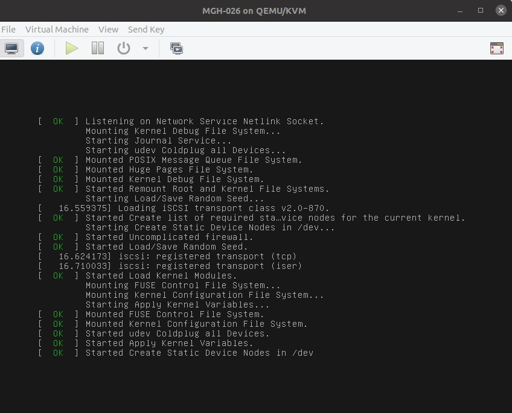
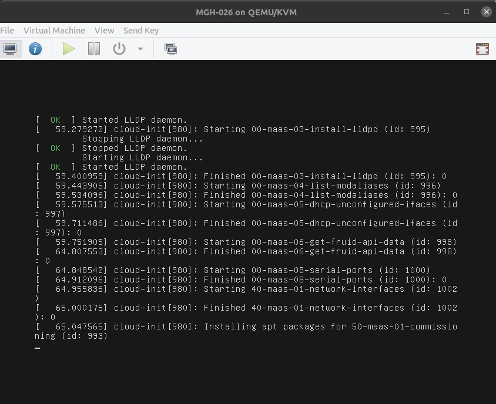
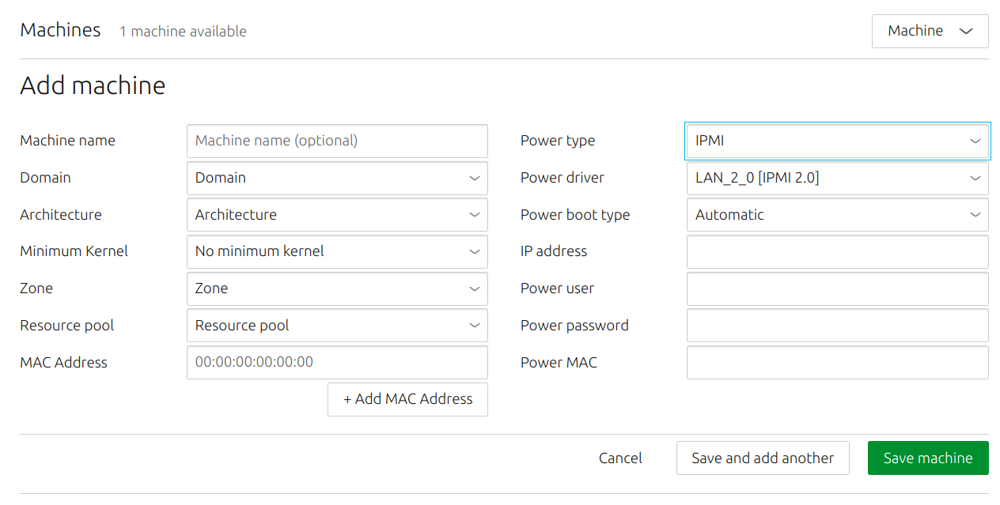
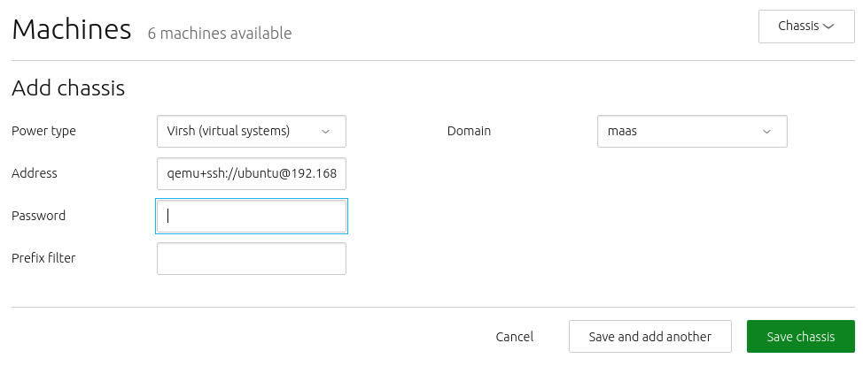

Add machines
There are two ways to add a machine to MAAS:
- If you place the machine on a connected network, and the machine is configured to netboot, MAAS will automatically enlist it.
- If you add a machine manually, MAAS will automatically commission it.
This article will explain more about both methods.
Quick questions you may have:
- How does enlistment work?
- How do VM host nodes work?
- How do I add virtual machines?
- How do I add a machine manually?
- How do I add a machine via a chassis?
MAAS typically adds a machine via a combination of DHCP, TFTP, and PXE. By now, you should have enabled MAAS to automatically add devices and machines to your environment. This unattended method of adding machines is called enlistment.
[note] Configuring a computer to boot over PXE is done via its BIOS, often referred to as “netboot” or “network boot”. [/note]
Regardless of how MAAS adds a machine, there are no special requirements for the underlying machine. In particular, there is no need to install an operating system on it.
Once MAAS is working to the point of adding machines, you’ll probably want to understand statuses and actions. See Node statuses and Machine actions respectively.
How enlistment works
When MAAS enlists a machine, it first contacts the DHCP server, so that the machine can be assigned an IP address. An IP address is necessary to download a kernel and initrd via TFTP, since these functions can’t accept domain names. Once the machine has a bootable kernel, MAAS boots it:
>
Next, initrd mounts a Squashfs image, ephemerally via HTTP, so that cloud-init can execute:
 >
>
Finally, cloud-init runs enlistment and setup scripts:
>
The enlistment scripts send information about the machine to the region API server, including the architecture, MAC address and other details. The API server, in turn, stores these details in the database. This information-gathering process is known as automatic discovery or network discovery.
After the enlistment process, MAAS places the machine in the ‘Ready’ state. ‘Ready’ is a holding state for machines that are enlisted (or commissioned), waiting to be deployed when needed.
Typically, the next step will be to commission the machine. N As an alternative to enlistment, an administrator can add a machine manually (see below). Typically this is done when enlistment doesn’t work for some reason. Note that when you manually add a machine, MAAS automatically commissions the machine as soon as you’ve added it.
[note] MAAS runs built-in commissioning scripts during the enlistment phase. When you commission a machine, any customised commissioning scripts you add will have access to data collected during enlistment. Follow the link above for more information about commissioning and commission scripts. [/note]
Add a machine manually
Enlistment can be done manually if the hardware specifications of the underlying machine are known. On the ‘Machines’ page of the web UI, click the ‘Add hardware’ button and then select ‘Machine’.
Fill in the form and hit ‘Save machine’. In this example, you are adding an IPMI machine:
>
The fields on the “Add machine” screen are as follows:
-
Machine name: This field is used to identify the machine to the user. It can be set to anything, though it is often set to the MAC address of the machine in question. This field is optional, in that MAAS will assign a unique, nonsense name if you leave it blank. You can change this nonsense name later, if desired.
-
Domain: This field sets the domain name of the domain managed by MAAS. It can be set to anything; MAAS assigns the domain name “maas” by default.
-
Architecture: This field refers to the architecture of the machine being added.
-
Minimum Kernal: This field supplies a dropdown of possible kernels available for deployment on this machine.
-
Zone: This field allows you to set the availability zone, selected from AZs that you have already created (if any).
-
Resource pool: This field allows you to set the resource pool for this machine, selected from pools you have already created (if any).
-
MAC Address: You should fill in this field with the MAC address of the machine you are adding. Note that the MAC address entered here must use a colon (:) separator, although some MAC addresses are written with dash (-) separators.
-
Power type: You must select the power type supported by the machine you are adding, and fill in additional required fields that appear. See Power management for details on the availabile power types and the relevant parameters for each type.
Normally, when you add a machine manually, MAAS will immediately attempt to commission the machine. Note that you will need to configure the underlying machine to boot over the network, or commissioning will fail. MAAS cannot handle this configuration for you. While the correct method for configuring network boot depends heavily on your server, there are a couple of common elements:
-
The network card on your server must be able to support PXE, i.e., your NIC – whether independent or integrated on a motherboard – must have a boot PROM that supports network booting. You’ll need to consult the documentation for the machine in question to determine this.
-
You usually have to interrupt the boot process and enter the BIOS/UEFI menu to configure the network cards’s PXE stack. Again, you may need to consult your machine’s documentation to pin down this step.
Additional steps will vary widely by machine type and architecture.
BMC enlistment
[note status=”2.4”] Note that in MAAS versions before 2.5, you are required to provide the MAC address of the PXE interface when adding a new machine manually. [/note]
IPMI machines
For IPMI machines, you only need to provide IPMI credentials. MAAS automatically discovers the machine and runs enlistment configuration by matching the BMC address.
Non-IPMI machines
For non-IPMI machines, you must specify a non-PXE MAC address. MAAS automatically discovers the machine and runs enlistment configuration by matching the non-PXE MAC address.
Add a machine via a chassis
Use the chassis feature to add multiple machines at once. To do this, instead of selecting ‘Machine’ as above, choose ‘Chassis’ from the drop-down menu. In the following example, MAAS will add all available VMs from the given virsh address:
>
The required fields will change based on the type of chassis you choose.
[note] As with the manual method, the underlying machines will require netbooting. [/note]